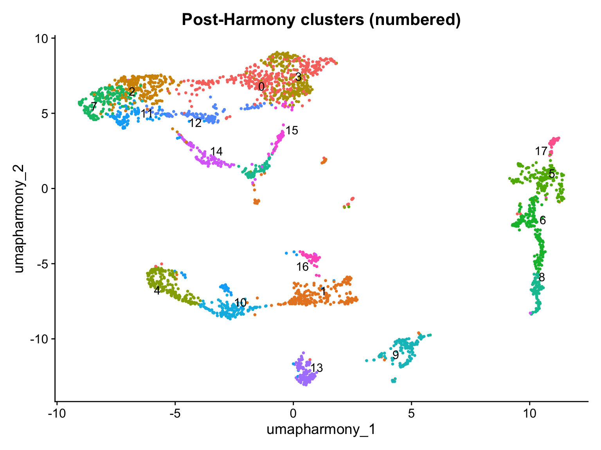
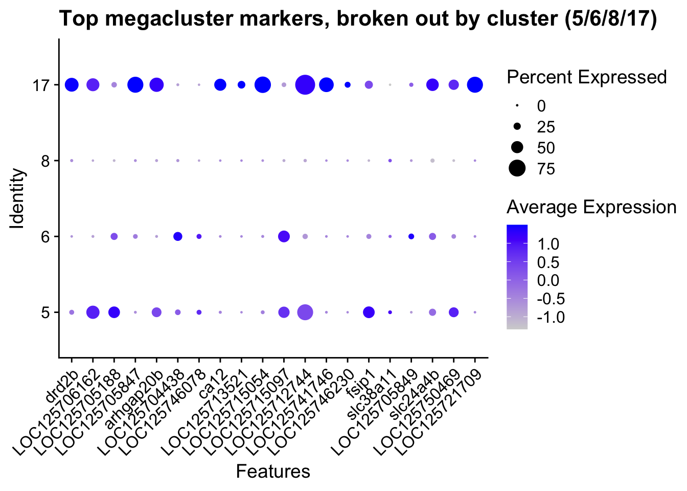
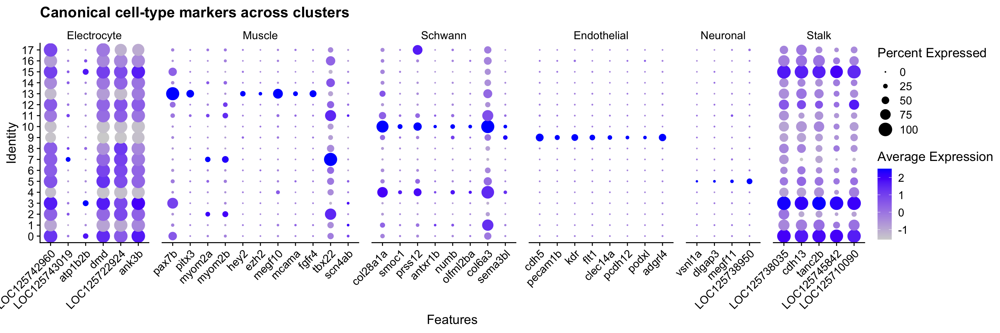
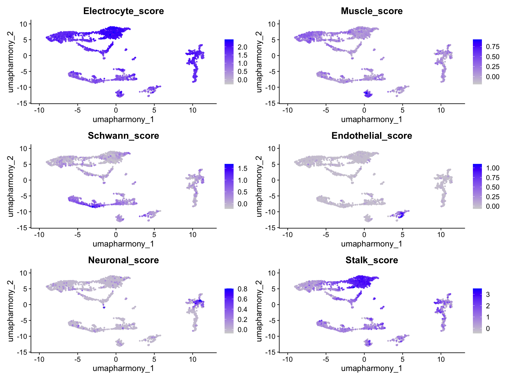
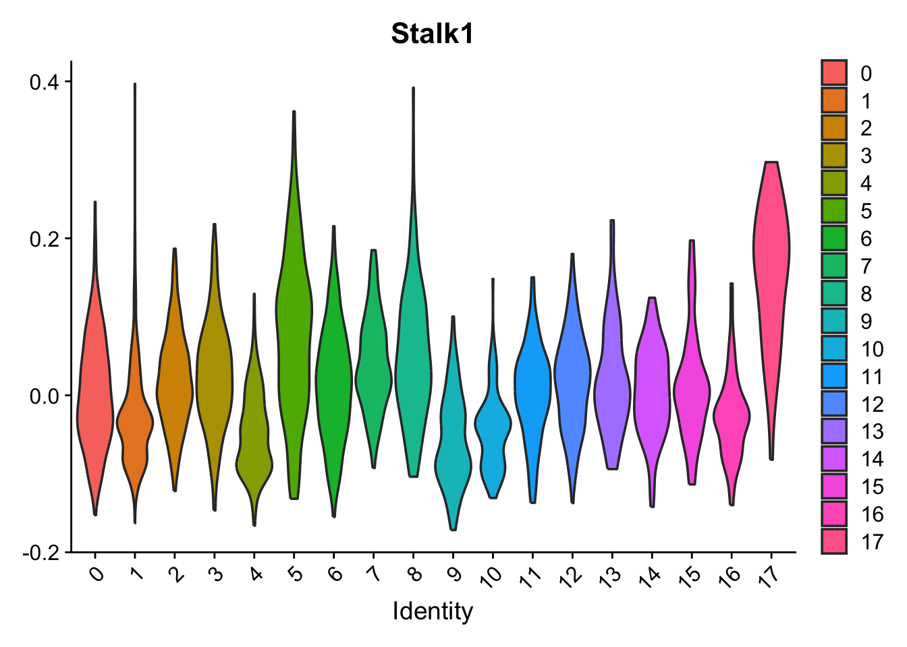
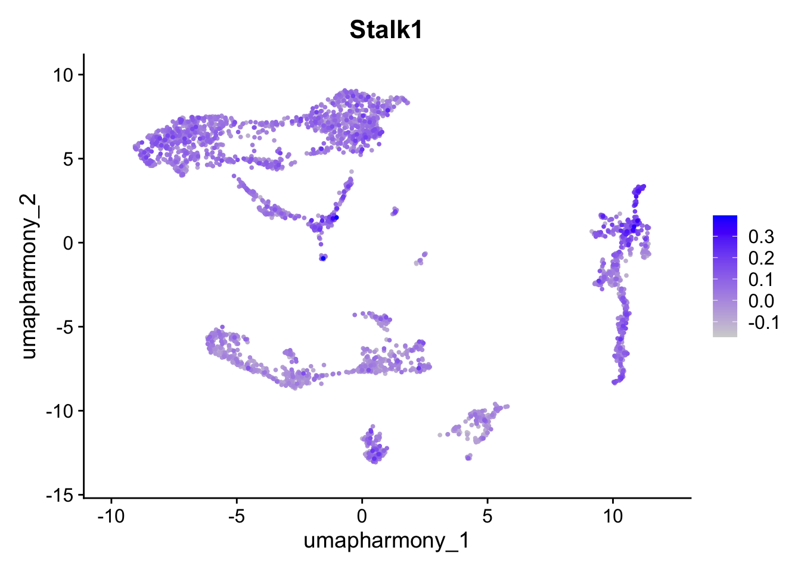
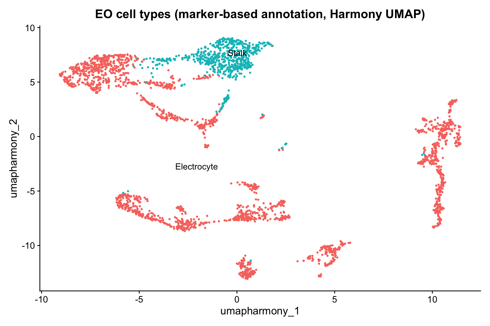
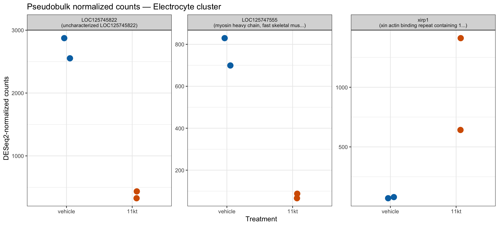
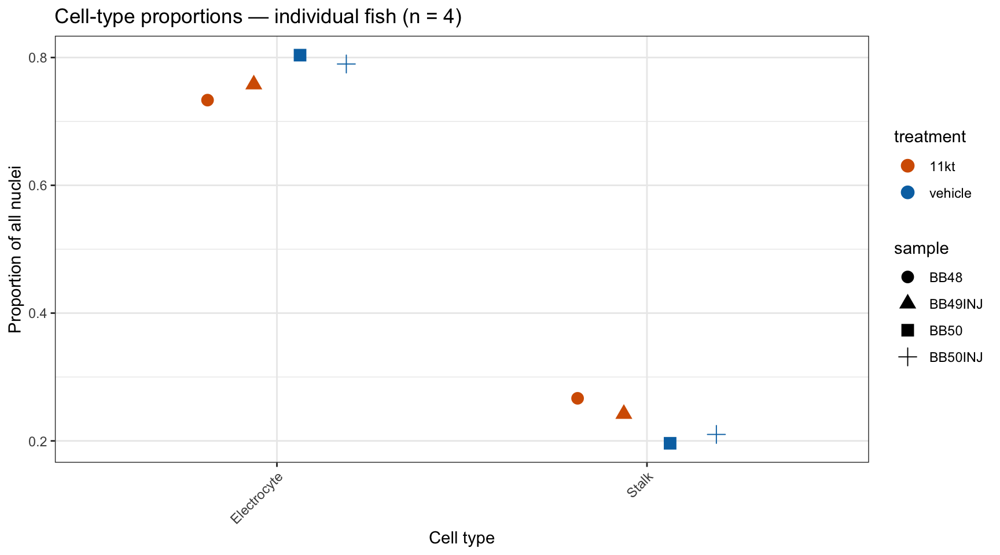
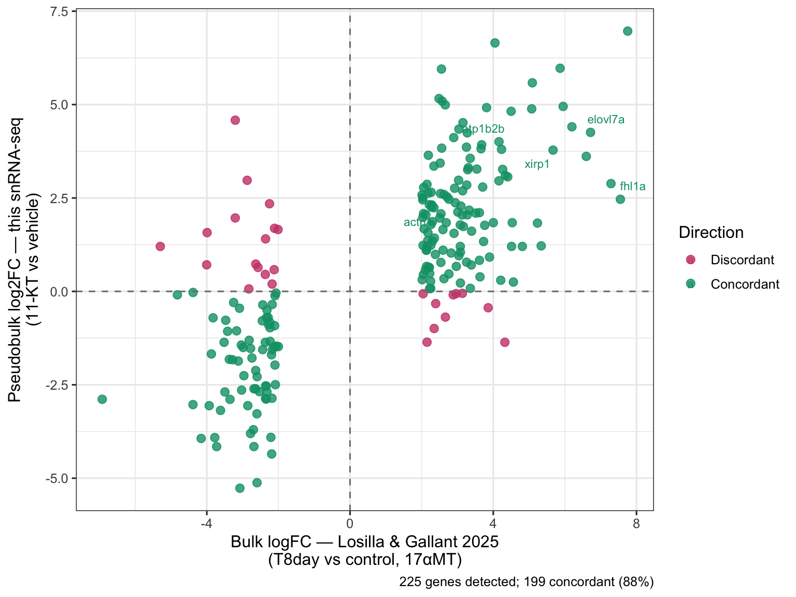

library(Seurat)
library(tidyverse)
library(patchwork)
library(glmGamPoi)
library(presto)
library(DESeq2)
library(limma)
library(ggrepel)
if (requireNamespace("speckle", quietly = TRUE)) library(speckle)Cell-Type Annotation and Differential Expression in the Electric Organ
NoteQuestions
- How do we turn unlabeled clusters into named cell types using curated marker genes?
- What anatomically distinguishes stalk electrocytes from face electrocytes, and how do we detect that split molecularly?
- Why is it statistically wrong to compare individual nuclei between treatment conditions, and what does pseudobulk fix?
- Does our snRNA-seq pipeline recover the gene-expression signatures of the androgen response previously found by bulk RNA-seq?
TipObjectives
- Load the post-Harmony checkpoint produced in Friday’s preprocessing episode.
- Find cluster markers with
FindAllMarkersand join NCBI gene-product descriptions for interpretation. - Assign cell-type labels (electrocyte, muscle, Schwann, endothelial, motor neuron) using curated marker gene lists and
AddModuleScore. - Sub-classify electrocytes into stalk vs. face using PMCA paralog expression.
- Aggregate raw counts per (cell type × sample) and run DESeq2 with treatment as the contrast.
- Plot per-fish pseudobulk values for top DE genes and interpret the n=2-per-group result honestly.
- Cross-validate against the Losilla & Gallant 2025 bulk RNA-seq DEG table.
Introduction
Yesterday you took raw CellRanger output for four EO samples, normalized it, corrected for GEM-well batch with Harmony, and produced a clustered UMAP. The end state — saved as data/checkpoints/02_harmony_clustered.rds — is a Seurat object with unlabeled numbered clusters.
Today is the biological payoff. We assign cell-type identities to those clusters, sub-divide the electrocytes into stalk vs. face populations, and run the central statistical test of the experiment: does 11-KT change gene expression in the electric organ, and if so, in which cells and which genes?
The episode has four parts:
- Cluster markers. What genes define each cluster, and what do they tell us about cell identity?
- Cell-type annotation. Use curated marker gene lists and module scores to label every cluster.
- Stalk vs. face. PMCA paralog expression separates innervated stalklets from the bulk of the electrocyte population.
- Differential expression. Pseudobulk + DESeq2 contrast 11-KT vs. vehicle within each cell type; cross-validate against Losilla & Gallant 2025.
Setup and load Friday’s checkpoint
The checkpoint is the starting state regardless of whether you ran Friday’s full pipeline. If you finished Friday, your in-memory object should already match; loading the checkpoint guarantees a known-good entry point.
merged_seurat <- readRDS("data/checkpoints/02_harmony_clustered.rds")
merged_seuratAn object of class Seurat
50433 features across 2888 samples within 2 assays
Active assay: SCT (19912 features, 3000 variable features)
3 layers present: counts, data, scale.data
1 other assay present: RNA
4 dimensional reductions calculated: pca, umap.pca, harmony, umap.harmonyThe starting point is the Harmony-corrected UMAP with the numbered clusters Friday’s pipeline produced. These are the unlabeled clusters today’s work turns into named cell types — keep this plot in mind as a reference for the annotated version we build later.
DimPlot(merged_seurat,
reduction = "umap.harmony",
group.by = "seurat_clusters",
label = TRUE,
repel = TRUE
) +
ggtitle("Post-Harmony clusters (numbered)") +
NoLegend()
Find cluster markers
FindAllMarkers runs a Wilcoxon test for each cluster against all other cells, returning genes that distinguish each cluster from the rest. Before calling it on SCT-normalized data with multiple samples, we run PrepSCTFindMarkers() to re-correct counts to a common depth across samples.
merged_seurat <- PrepSCTFindMarkers(merged_seurat, verbose = FALSE)all_markers <- FindAllMarkers(
merged_seurat,
only.pos = TRUE,
verbose = FALSE
)
all_markers <- all_markers |>
arrange(cluster, desc(avg_log2FC))
head(all_markers, 20) p_val avg_log2FC pct.1 pct.2 p_val_adj cluster
ykt6 2.054058e-06 2.623344 0.027 0.004 4.090039e-02 0
LOC125723541 4.047744e-27 2.417031 0.147 0.027 8.059867e-23 0
napepld 1.818240e-07 2.407838 0.037 0.007 3.620479e-03 0
LOC125749277 3.282316e-35 2.355863 0.209 0.041 6.535749e-31 0
LOC125708001 1.355142e-06 2.308302 0.035 0.007 2.698359e-02 0
spa17 9.502851e-08 2.301415 0.048 0.011 1.892208e-03 0
igsf9b 9.277223e-23 2.278732 0.158 0.037 1.847281e-18 0
uhrf1 1.559386e-05 2.246374 0.029 0.006 3.105049e-01 0
LOC125719547 3.561224e-18 2.224212 0.128 0.031 7.091109e-14 0
LOC125709900 4.660350e-06 2.201387 0.032 0.007 9.279689e-02 0
LOC125747510 4.390068e-16 2.197232 0.131 0.035 8.741503e-12 0
LOC125712692 1.632575e-06 2.196333 0.037 0.008 3.250783e-02 0
il17ra1a 5.258831e-05 2.163912 0.027 0.006 1.000000e+00 0
chpfa 2.433390e-11 2.152771 0.088 0.023 4.845367e-07 0
LOC125704393 1.000116e-09 2.146210 0.064 0.015 1.991432e-05 0
LOC125712442 9.983754e-05 2.120843 0.027 0.006 1.000000e+00 0
LOC125751019 5.357706e-14 2.111445 0.102 0.025 1.066826e-09 0
kif18a 1.004328e-05 2.096798 0.035 0.008 1.999818e-01 0
hrh1 5.673328e-05 2.085909 0.029 0.007 1.000000e+00 0
kl 5.673328e-05 2.085909 0.029 0.007 1.000000e+00 0
gene
ykt6 ykt6
LOC125723541 LOC125723541
napepld napepld
LOC125749277 LOC125749277
LOC125708001 LOC125708001
spa17 spa17
igsf9b igsf9b
uhrf1 uhrf1
LOC125719547 LOC125719547
LOC125709900 LOC125709900
LOC125747510 LOC125747510
LOC125712692 LOC125712692
il17ra1a il17ra1a
chpfa chpfa
LOC125704393 LOC125704393
LOC125712442 LOC125712442
LOC125751019 LOC125751019
kif18a kif18a
hrh1 hrh1
kl klAnnotate with gene-product descriptions
The Seurat row names mix curated gene symbols and LOC##### IDs. To make the marker table interpretable, we parse the B. brachyistius GTF and join the human-readable product description for each gene.
gtf_raw <- read_tsv(
"data/ssrnaseq_data/genes.gtf.gz",
comment = "#",
col_names = FALSE,
col_types = "ccciicccc",
show_col_types = FALSE
)
gene_desc <- gtf_raw |>
filter(str_detect(X9, 'product "')) |>
mutate(
gene_id = str_extract(X9, 'gene_id "([^"]+)"', group = 1),
gene_name = str_extract(X9, 'gene "([^"]+)"', group = 1),
product = str_extract(X9, 'product "([^"]+)"', group = 1)
) |>
dplyr::select(gene_id, gene_name, product) |>
distinct(gene_id, .keep_all = TRUE)
# Build a combined lookup indexed by either gene_id (LOC ID) OR gene_name (symbol)
gene_lookup <- bind_rows(
gene_desc |> transmute(key = gene_id, gene_name, product),
gene_desc |>
filter(!is.na(gene_name), gene_name != gene_id) |>
transmute(key = gene_name, gene_name, product)
) |>
distinct(key, .keep_all = TRUE)annotated_markers <- all_markers |>
left_join(gene_lookup |> dplyr::select(key, gene_name, product),
by = c("gene" = "key")
)
annotated_markers |>
group_by(cluster) |>
slice_max(avg_log2FC, n = 3) |>
ungroup() |>
dplyr::select(cluster, gene, gene_name, product, avg_log2FC, p_val_adj) |>
head(20)# A tibble: 20 × 6
cluster gene gene_name product avg_log2FC p_val_adj
<fct> <chr> <chr> <chr> <dbl> <dbl>
1 0 ykt6 ykt6 YKT6 v-SNARE homolog … 2.62 4.09e- 2
2 0 LOC125723541 LOC125723541 uncharacterized LOC12… 2.42 8.06e-23
3 0 napepld napepld N-acyl phosphatidylet… 2.41 3.62e- 3
4 1 LOC125741804 LOC125741804 protein shisa-6, tran… 7.11 6.12e- 6
5 1 LOC125705310 LOC125705310 putative methyltransf… 6.48 1.58e-12
6 1 st18 st18 ST18 C2H2C-type zinc … 6.31 6.12e- 6
7 2 LOC125719994 LOC125719994 uncharacterized LOC12… 2.61 8.07e- 2
8 2 LOC125720951 LOC125720951 ankyrin repeat and SO… 2.43 1 e+ 0
9 2 LOC125709786 LOC125709786 uncharacterized LOC12… 2.34 1 e+ 0
10 3 LOC125725482 LOC125725482 uncharacterized LOC12… 5.54 6.51e- 5
11 3 LOC125746231 LOC125746231 serine/threonine-prot… 5.13 1.39e- 7
12 3 LOC125706692 LOC125706692 tyrosine-protein phos… 4.87 4.37e- 5
13 4 LOC125738877 LOC125738877 leptin-B-like 5.36 3.18e- 3
14 4 LOC125744864 LOC125744864 tubulin alpha-1A chai… 5.36 3.18e- 3
15 4 LOC125751762 LOC125751762 TNF receptor-associat… 5.36 3.18e- 3
16 4 dnajb13 dnajb13 DnaJ heat shock prote… 5.36 3.18e- 3
17 4 LOC125718053 LOC125718053 target of Myb protein… 5.36 3.18e- 3
18 4 LOC125722975 LOC125722975 claudin-34-like, tran… 5.36 3.18e- 3
19 5 cabp5a cabp5a calcium binding prote… 6.40 8.33e-13
20 5 LOC125715314 LOC125715314 gamma-synuclein-like,… 6.40 1.50e- 6
NoteWhy so many
LOC#####?
NCBI assigns LOC names as provisional symbols when a gene is computationally predicted but lacks an official name. The number is the NCBI Gene ID. The product field is where the function lives — “potassium voltage-gated channel…like” is a meaningful clue even when the gene name is LOC125743019.
For non-model genomes like B. brachyistius, this level of annotation is typical and improves over time as more papers are published.
TipExplore the markers interactively
Browse these cluster markers in the Interactive Marker-Gene Explorer: click a cluster on the UMAP to pull up its sorted, searchable marker table — the same FindAllMarkers statistics and product descriptions built above.
Curated cell-type annotation
Generic GO enrichment performs poorly when one cell type dominates a tissue. Instead, we annotate using curated marker gene lists validated in published work on the mormyrid electric organ.
Two electrocyte markers are unambiguous across the literature:
- scn4aa (
LOC125742960) — Nav1.4a, the principal electrogenic Na⁺ channel. Convergently recruited into electric organs across multiple independent electric-fish lineages (Gallant et al. 2014 Science; Thompson et al. 2018 Curr Biol). - kcna7a (
LOC125743019) — Kv1.7a, the delayed-rectifier K⁺ channel setting EOD repolarization kinetics (Losilla & Gallant 2025 JEB).
Electrocytes are myogenic in origin (derived from muscle), so muscle satellite cells (pax7b, myomesins) typically sit near electrocytes on the UMAP. Schwann cells, vascular endothelial cells, and a small motor neuron population round out the expected atlas.
marker_genes <- list(
Electrocyte = c(
"LOC125742960", # scn4aa
"LOC125743019", # kcna7a
"atp1b2b",
"dmd",
"LOC125722924",
"ank3b"
),
Muscle = c(
"pax7b", "pitx3", "myom2a", "myom2b",
"hey2", "ezh2", "megf10", "mcama",
"fgfr4", "tbx22","scn4ab"
),
Schwann = c(
"col28a1a", "smoc1", "prss12", "antxr1b",
"numb", "olfml2ba", "col6a3", "sema3bl"
),
Endothelial = c(
"cdh5", "pecam1b", "kdr", "flt1",
"clec14a", "pcdh12", "podxl", "adgrl4"
),
Neuronal = c(
"vsnl1a",#visinin-like
"dlgap3", # postsynaptic density scaffold
"megf11", # multiple EGF-like-domains 11
"LOC125738950" # Kv3.2 / KCNC2
),
Stalk = c(
"LOC125738035", #PMCA
"cdh13", # cadherin 13
"tanc2b", #TPR/ankryin/cc2b
"LOC125745842", # ETS translocation variant 5-like
"LOC125710090" #erbB-4-like RTK
)
)
# Filter to genes actually present in this dataset
marker_genes <- lapply(marker_genes, function(g) g[g %in% rownames(merged_seurat)])
print(sapply(marker_genes, length))Electrocyte Muscle Schwann Endothelial Neuronal Stalk
6 11 8 8 4 5 mega <- c("17", "5", "6", "8")
merged_seurat$megacluster <- ifelse(
as.character(merged_seurat$seurat_clusters) %in% mega,
"megacluster", "rest"
)
mega_markers <- FindMarkers(
merged_seurat,
ident.1 = "megacluster",
ident.2 = "rest",
group.by = "megacluster",
only.pos = TRUE,
verbose = FALSE
) |>
tibble::rownames_to_column("gene") |>
left_join(gene_lookup |> dplyr::select(key, gene_name, product),
by = c("gene" = "key")
) |>
arrange(desc(avg_log2FC))
mega_markers |>
dplyr::select(gene, gene_name, product, avg_log2FC, pct.1, pct.2, p_val_adj) |>
head(25) gene gene_name
1 drd2b drd2b
2 LOC125706162 LOC125706162
3 LOC125705188 LOC125705188
4 LOC125705847 LOC125705847
5 arhgap20b arhgap20b
6 LOC125704438 LOC125704438
7 LOC125746078 LOC125746078
8 ca12 ca12
9 LOC125713521 LOC125713521
10 LOC125715054 LOC125715054
11 LOC125715097 LOC125715097
12 LOC125712744 LOC125712744
13 LOC125741746 LOC125741746
14 LOC125746230 LOC125746230
15 fsip1 fsip1
16 slc38a11 slc38a11
17 LOC125705849 LOC125705849
18 slc24a4b slc24a4b
19 LOC125750469 LOC125750469
20 LOC125721709 LOC125721709
21 LOC125738972 LOC125738972
22 tenm1 tenm1
23 hs6st3b hs6st3b
24 atp10b atp10b
25 LOC125705982 LOC125705982
product
1 dopamine receptor D2b, transcript variant X1
2 uncharacterized LOC125706162
3 uncharacterized LOC125705188
4 uncharacterized LOC125705847
5 Rho GTPase activating protein 20b, transcript variant X1
6 uncharacterized LOC125704438
7 uncharacterized LOC125746078
8 carbonic anhydrase XII, transcript variant X2
9 uncharacterized LOC125713521, transcript variant X2
10 uncharacterized LOC125715054, transcript variant X2
11 nidogen-2-like
12 sodium channel subunit beta-3-like
13 cytoplasmic phosphatidylinositol transfer protein 1-like
14 uncharacterized LOC125746230
15 fibrous sheath interacting protein 1, transcript variant X1
16 solute carrier family 38 member 11, transcript variant X2
17 uncharacterized LOC125705849
18 solute carrier family 24 member 4b, transcript variant X1
19 leucine-rich repeat-containing protein 17-like, transcript variant X3
20 glycerophosphodiester phosphodiesterase domain-containing protein 5-like, transcript variant X2
21 uncharacterized LOC125738972, transcript variant X3
22 teneurin transmembrane protein 1, transcript variant X3
23 heparan sulfate 6-O-sulfotransferase 3b
24 ATPase phospholipid transporting 10B, transcript variant X1
25 uncharacterized LOC125705982
avg_log2FC pct.1 pct.2 p_val_adj
1 6.638540 0.099 0.003 1.540963e-41
2 6.317928 0.235 0.007 1.544645e-103
3 6.128130 0.253 0.007 3.436556e-112
4 6.026217 0.105 0.002 2.515042e-45
5 5.901083 0.188 0.006 3.666558e-79
6 5.837237 0.176 0.004 1.384901e-77
7 5.818621 0.087 0.002 2.322606e-37
8 5.818621 0.052 0.001 1.243469e-21
9 5.766154 0.023 0.000 1.378499e-07
10 5.711706 0.091 0.003 5.071093e-35
11 5.677679 0.326 0.012 1.085172e-142
12 5.623391 0.364 0.018 5.092967e-152
13 5.503119 0.057 0.003 2.643064e-19
14 5.470698 0.016 0.000 3.233724e-05
15 5.454873 0.228 0.008 1.845729e-96
16 5.426304 0.049 0.001 7.791926e-20
17 5.417259 0.070 0.002 2.367982e-28
18 5.380500 0.225 0.007 2.010389e-97
19 5.318695 0.200 0.007 2.704866e-84
20 5.315047 0.059 0.003 3.844225e-20
21 5.284285 0.049 0.001 7.854865e-20
22 5.206023 0.293 0.023 1.014595e-103
23 5.181191 0.183 0.009 1.784881e-70
24 5.181191 0.047 0.001 7.654430e-18
25 5.181191 0.010 0.000 1.705286e-02mega <- c("5", "6", "8", "17")
mega_cells <- WhichCells(merged_seurat, expression = seurat_clusters %in% mega)
# 1. Do the top mega-markers concentrate in one sub-cluster, or spread out?
top_mega <- head(mega_markers$gene, 20)
DotPlot(
merged_seurat,
features = top_mega,
group.by = "seurat_clusters",
idents = mega # restrict the plot to 5/6/8/17
) +
RotatedAxis() +
ggtitle("Top megacluster markers, broken out by cluster (5/6/8/17)")
# 2. What distinguishes each of the four from the other three?
mega_each <- FindAllMarkers(
subset(merged_seurat, idents = mega),
only.pos = TRUE,
verbose = FALSE
) |>
left_join(gene_lookup |> dplyr::select(key, product), by = c("gene" = "key")) |>
group_by(cluster) |>
slice_max(avg_log2FC, n = 8) |>
ungroup() |>
dplyr::select(cluster, gene, product, avg_log2FC, pct.1, pct.2)
mega_each# A tibble: 32 × 6
cluster gene product avg_log2FC pct.1 pct.2
<fct> <chr> <chr> <dbl> <dbl> <dbl>
1 5 megf11 multiple EGF-like-domains 11, tr… 5.74 0.157 0.005
2 5 LOC125707135 uncharacterized LOC125707135, tr… 4.99 0.319 0.031
3 5 dlgap3 discs, large (Drosophila) homolo… 4.96 0.089 0.003
4 5 vsnl1a visinin-like 1a, transcript vari… 4.91 0.063 0
5 5 LOC125738950 potassium voltage-gated channel … 4.74 0.346 0.023
6 5 kiaa0825 KIAA0825 ortholog, transcript va… 4.58 0.607 0.099
7 5 LOC125715794 latent-transforming growth facto… 4.46 0.052 0
8 5 LOC125709581 protein diaphanous homolog 3-lik… 4.46 0.042 0
9 6 marchf4 membrane associated ring-CH-type… 6.38 0.263 0.003
10 6 LOC125712221 uncharacterized LOC125712221 6.06 0.145 0
# ℹ 22 more rowsCluster 3 vs cluster 7
A direct pairwise comparison: which genes separate cluster 3 from cluster 7? FindMarkers with explicit ident.1/ident.2 tests just these two clusters against each other (positive avg_log2FC = higher in cluster 3).
markers_3v7 <- FindMarkers(
merged_seurat,
ident.1 = "3",
ident.2 = "7",
group.by = "seurat_clusters",
verbose = FALSE
) |>
tibble::rownames_to_column("gene") |>
left_join(gene_lookup |> dplyr::select(key, gene_name, product),
by = c("gene" = "key")
) |>
arrange(desc(avg_log2FC))
markers_3v7 |>
dplyr::select(gene, gene_name, product, avg_log2FC, pct.1, pct.2, p_val_adj) |>
head(25) gene gene_name
1 cdh13 cdh13
2 pde4d pde4d
3 LOC125738297 LOC125738297
4 LOC125705853 LOC125705853
5 notch2 notch2
6 LOC125746073 LOC125746073
7 cpm cpm
8 LOC125710090 LOC125710090
9 LOC125739167 LOC125739167
10 LOC125727685 LOC125727685
11 LOC125745842 LOC125745842
12 slc20a2 slc20a2
13 st6galnac2 st6galnac2
14 LOC125717831 LOC125717831
15 nat8l nat8l
16 slc6a16a slc6a16a
17 srgap2 srgap2
18 LOC125709350 LOC125709350
19 atp1b2b atp1b2b
20 zgc:56699 zgc:56699
21 LOC125714712 LOC125714712
22 plxnb1b plxnb1b
23 LOC125716348 LOC125716348
24 LOC125710259 LOC125710259
25 LOC125749277 LOC125749277
product
1 cadherin 13, H-cadherin (heart)
2 phosphodiesterase 4D, cAMP-specific, transcript variant X8
3 receptor-type tyrosine-protein phosphatase O-like, transcript variant X1
4 uncharacterized LOC125705853
5 notch receptor 2, transcript variant X1
6 multiple C2 and transmembrane domain-containing protein 1-like
7 carboxypeptidase M, transcript variant X2
8 receptor tyrosine-protein kinase erbB-4-like, transcript variant X1
9 carboxypeptidase M-like
10 xylosyltransferase 1-like, transcript variant X1
11 ETS translocation variant 5-like, transcript variant X1
12 solute carrier family 20 member 2, transcript variant X1
13 ST6 (alpha-N-acetyl-neuraminyl-2,3-beta-galactosyl-1,3)-N-acetylgalactosaminide alpha-2,6-sialyltransferase 2
14 ras-related protein Rab-26-like, transcript variant X2
15 N-acetyltransferase 8-like, transcript variant X2
16 solute carrier family 6 member 16a, transcript variant X1
17 SLIT-ROBO Rho GTPase activating protein 2, transcript variant X2
18 uncharacterized LOC125709350
19 ATPase Na+/K+ transporting subunit beta 2b
20 uncharacterized protein LOC405758 homolog, transcript variant X3
21 protein jagged-2-like
22 plexin b1b, transcript variant X3
23 polyamine-transporting ATPase 13A3-like, transcript variant X3
24 kalirin-like, transcript variant X1
25 uncharacterized LOC125749277, transcript variant X1
avg_log2FC pct.1 pct.2 p_val_adj
1 8.206394 1.000 0.146 2.401509e-66
2 7.492405 0.899 0.101 5.353835e-54
3 7.301055 0.544 0.000 8.342450e-27
4 7.293895 0.583 0.000 7.046245e-30
5 6.905878 0.934 0.022 2.275447e-60
6 6.898134 0.842 0.191 8.286754e-41
7 6.871662 0.351 0.000 4.185162e-14
8 6.779322 1.000 0.146 2.901201e-66
9 6.642843 0.417 0.000 3.061085e-18
10 6.561707 0.408 0.000 1.164095e-17
11 6.525486 0.996 0.067 5.258648e-67
12 6.507030 0.811 0.017 9.757370e-48
13 6.370764 0.373 0.000 1.656865e-15
14 6.366220 0.500 0.011 2.233005e-22
15 6.315269 0.588 0.011 9.358050e-29
16 6.272200 0.364 0.000 5.386616e-15
17 6.259655 0.825 0.034 6.472615e-48
18 6.148875 0.601 0.028 2.666582e-28
19 6.118577 0.355 0.006 9.430638e-14
20 6.113163 0.417 0.011 6.744795e-17
21 6.102275 0.307 0.000 1.168029e-11
22 6.077472 0.851 0.028 6.962940e-51
23 5.982693 0.570 0.011 1.788947e-27
24 5.876783 0.947 0.062 7.308439e-60
25 5.871662 0.259 0.000 5.025422e-09Marker dot plot across clusters
A compact diagnostic — 3–4 most informative markers per cell type — projected as a dot plot across clusters. Dot size = fraction of cells expressing; color = mean expression.
DotPlot(merged_seurat,
features = marker_genes,
group.by = "seurat_clusters"
) +
RotatedAxis() +
ggtitle("Canonical cell-type markers across clusters")
Clusters 7+2 vs clusters 0+3
A grouped pairwise contrast: pool clusters 7 and 2 against clusters 0 and 3. Passing a vector to ident.1/ident.2 treats each side as a single group (positive avg_log2FC = higher in the 7+2 group).
markers_72v03 <- FindMarkers(
merged_seurat,
ident.1 = c("7", "2"),
ident.2 = c("0", "3"),
group.by = "seurat_clusters",
verbose = FALSE
) |>
tibble::rownames_to_column("gene") |>
left_join(gene_lookup |> dplyr::select(key, gene_name, product),
by = c("gene" = "key")
) |>
arrange(desc(avg_log2FC))
markers_72v03 |>
dplyr::select(gene, gene_name, product, avg_log2FC, pct.1, pct.2, p_val_adj) |>
head(25) gene gene_name
1 pi4k2a pi4k2a
2 gadd45ga gadd45ga
3 LOC125739449 LOC125739449
4 LOC125714660 LOC125714660
5 tnfaip8l2b tnfaip8l2b
6 LOC125728088 LOC125728088
7 intu intu
8 LOC125738963 LOC125738963
9 cttnbp2nlb cttnbp2nlb
10 LOC125724935 LOC125724935
11 LOC125719994 LOC125719994
12 tbx22 tbx22
13 LOC125723345 LOC125723345
14 LOC125712671 LOC125712671
15 LOC125749615 LOC125749615
16 LOC125720308 LOC125720308
17 LOC125708896 LOC125708896
18 camk2a camk2a
19 lcmt2 lcmt2
20 p2ry4 p2ry4
21 LOC125739012 LOC125739012
22 LOC125741747 LOC125741747
23 LOC125716642 LOC125716642
24 gls2b gls2b
25 LOC125738891 LOC125738891
product
1 phosphatidylinositol 4-kinase type 2 alpha
2 growth arrest and DNA-damage-inducible, gamma a
3 fatty acyl-CoA reductase 1-like, transcript variant X4
4 calpain-3-like, transcript variant X2
5 tumor necrosis factor, alpha-induced protein 8-like 2b
6 transcription factor TFIIIB component B'' homolog, transcript variant X14
7 inturned planar cell polarity protein, transcript variant X3
8 uncharacterized LOC125738963
9 CTTNBP2 N-terminal like b, transcript variant X2
10 CXADR-like membrane protein
11 uncharacterized LOC125719994, transcript variant X3
12 T-box transcription factor 22, transcript variant X2
13 platelet-derived growth factor C-like
14 protein phosphatase 1A-like
15 uncharacterized LOC125749615, transcript variant X2
16 ELAV-like protein 2, transcript variant X5
17 tumor protein 63-like, transcript variant X1
18 calcium/calmodulin-dependent protein kinase II alpha, transcript variant X1
19 leucine carboxyl methyltransferase 2, transcript variant X1
20 pyrimidinergic receptor P2Y4
21 uncharacterized LOC125739012, transcript variant X1
22 uncharacterized LOC125741747, transcript variant X2
23 forkhead box protein L2-like
24 glutaminase 2b (liver, mitochondrial), transcript variant X3
25 liprin-alpha-2-like, transcript variant X2
avg_log2FC pct.1 pct.2 p_val_adj
1 3.953512 0.047 0.002 1.007282e-02
2 3.862364 0.152 0.008 5.073748e-15
3 3.783587 0.061 0.003 4.243439e-04
4 3.757592 0.105 0.008 2.082015e-08
5 3.731119 0.039 0.002 1.066996e-01
6 3.731119 0.037 0.002 2.341930e-01
7 3.731119 0.017 0.000 1.000000e+00
8 3.704152 0.115 0.008 8.990369e-10
9 3.630774 0.632 0.246 1.116043e-46
10 3.572083 0.350 0.037 7.493431e-36
11 3.561194 0.037 0.002 2.349047e-01
12 3.518621 0.880 0.284 1.570143e-97
13 3.488344 0.287 0.042 1.577798e-24
14 3.468085 0.061 0.005 1.780173e-03
15 3.468085 0.034 0.002 5.154733e-01
16 3.468085 0.032 0.002 1.000000e+00
17 3.398141 0.944 0.229 4.757106e-130
18 3.375639 0.336 0.040 1.899479e-32
19 3.368549 0.015 0.000 1.000000e+00
20 3.368549 0.015 0.000 1.000000e+00
21 3.308428 0.064 0.010 3.053540e-02
22 3.296624 0.436 0.060 2.439956e-43
23 3.261634 0.083 0.008 2.463750e-05
24 3.239266 0.064 0.007 3.094082e-03
25 3.233620 0.475 0.096 1.601874e-41markers_eo_vs_15 <- FindMarkers(
merged_seurat,
ident.1 = c("7", "2","0", "3"),
ident.2= c("15"),
group.by = "seurat_clusters",
verbose = FALSE
) |>
tibble::rownames_to_column("gene") |>
left_join(gene_lookup |> dplyr::select(key, gene_name, product),
by = c("gene" = "key")
) |>
arrange(desc(avg_log2FC))
markers_eo_vs_15 |>
dplyr::select(gene, gene_name, product, avg_log2FC, pct.1, pct.2, p_val_adj) |>
head(25) gene gene_name
1 tbx22 tbx22
2 LOC125741747 LOC125741747
3 nt5c1aa nt5c1aa
4 frmd3 frmd3
5 LOC125717522 LOC125717522
6 ofcc1 ofcc1
7 LOC125751183 LOC125751183
8 LOC125710193 LOC125710193
9 ksr1b ksr1b
10 LOC125705001 LOC125705001
11 LOC125719463 LOC125719463
12 ttn.2 ttn.2
13 mettl15 mettl15
14 fbxw7 fbxw7
15 LOC125724935 LOC125724935
16 LOC125751101 LOC125751101
17 LOC125708896 LOC125708896
18 n4bp2 n4bp2
19 mapkapk2a mapkapk2a
20 arg2 arg2
21 LOC125725339 LOC125725339
22 LOC125745822 LOC125745822
23 LOC125751972 LOC125751972
24 LOC125749273 LOC125749273
25 LOC125738744 LOC125738744
product
1 T-box transcription factor 22, transcript variant X2
2 uncharacterized LOC125741747, transcript variant X2
3 5'-nucleotidase, cytosolic IAa, transcript variant X2
4 FERM domain containing 3
5 inward rectifier potassium channel 2-like, transcript variant X1
6 orofacial cleft 1 candidate 1
7 transmembrane protein 182-like
8 FERM and PDZ domain-containing protein 4-like, transcript variant X8
9 kinase suppressor of ras 1b, transcript variant X3
10 uncharacterized LOC125705001
11 uncharacterized LOC125719463
12 titin, tandem duplicate 2
13 methyltransferase like 15
14 F-box and WD repeat domain containing 7
15 CXADR-like membrane protein
16 neuronal tyrosine-phosphorylated phosphoinositide-3-kinase adapter 1-like
17 tumor protein 63-like, transcript variant X1
18 NEDD4 binding protein 2, transcript variant X1
19 MAPK activated protein kinase 2a, transcript variant X1
20 arginase 2
21 protein NLRC3-like
22 uncharacterized LOC125745822
23 ras-specific guanine nucleotide-releasing factor 1-like, transcript variant X1
24 uncharacterized LOC125749273, transcript variant X2
25 N-acetyl-beta-glucosaminyl-glycoprotein 4-beta-N-acetylgalactosaminyltransferase 1-like, transcript variant X1
avg_log2FC pct.1 pct.2 p_val_adj
1 4.496448 0.525 0.200 1.308307e-03
2 4.289060 0.212 0.000 1.000000e+00
3 4.058608 0.238 0.000 8.852345e-01
4 4.049148 0.187 0.000 1.000000e+00
5 3.945878 0.239 0.000 8.247606e-01
6 3.627769 0.152 0.000 1.000000e+00
7 3.244164 0.140 0.000 1.000000e+00
8 3.141070 0.130 0.000 1.000000e+00
9 3.127650 0.244 0.018 1.000000e+00
10 3.123148 0.126 0.000 1.000000e+00
11 3.077345 0.128 0.000 1.000000e+00
12 3.059294 0.758 0.527 3.409050e-06
13 3.039625 0.125 0.000 1.000000e+00
14 3.030039 0.175 0.018 1.000000e+00
15 3.020389 0.163 0.018 1.000000e+00
16 3.010674 0.119 0.000 1.000000e+00
17 2.996524 0.518 0.255 3.141269e-02
18 2.986095 0.230 0.018 1.000000e+00
19 2.940771 0.110 0.000 1.000000e+00
20 2.930503 0.115 0.000 1.000000e+00
21 2.899252 0.124 0.000 1.000000e+00
22 2.883853 0.594 0.273 1.452506e-03
23 2.883369 0.195 0.018 1.000000e+00
24 2.878036 0.085 0.000 1.000000e+00
25 2.853788 0.291 0.055 1.000000e+00Module scores per cell type
AddModuleScore computes the average expression of a gene set minus a random control set — positive scores mean the cell expresses that gene set more than expected by chance. We compute one score per cell type plus a PMCA score.
for (ct in names(marker_genes)) {
if (length(marker_genes[[ct]]) < 3) {
message(ct, ": fewer than 3 markers found — skipping")
next
}
merged_seurat <- AddModuleScore(
merged_seurat,
features = list(marker_genes[[ct]]),
name = paste0(ct, "_score"),
nbin = 12,
seed = 42
)
old_col <- paste0(ct, "_score1")
new_col <- paste0(ct, "_score")
merged_seurat@meta.data[[new_col]] <- merged_seurat@meta.data[[old_col]]
merged_seurat@meta.data[[old_col]] <- NULL
}
score_cols <- paste0(names(marker_genes), "_score")
score_cols <- score_cols[score_cols %in% colnames(merged_seurat@meta.data)]
plot_score_cols <- c(
score_cols,
if ("PMCA_score" %in% colnames(merged_seurat@meta.data)) "PMCA_score"
)
FeaturePlot(merged_seurat,
features = plot_score_cols,
reduction = "umap.harmony",
ncol = 2,
order = TRUE
)
# gd <- readr::read_csv("episodes/data/ssrnaseq_data/.../gene_dict.csv") # gene, symbol, product
# # or parse episodes/data/ssrnaseq_data/genes.gtf.gz as export_marker_explorer.R does
s<-merged_seurat
gd<-gene_lookup
pick <- function(regex) gd$gene_name[grepl(regex, gd$product, ignore.case=TRUE)]
nmj_panel <- intersect(pick("nicotinic|rapsyn|receptor-associated protein of the synapse|docking protein 7|muscle.*receptor tyrosine kinase|acetylcholinesterase|collagen-like tail|agrin"),
rownames(s))s <- AddModuleScore(s, features=list(Stalk=nmj_panel), name="Stalk",nbin=12)
VlnPlot(s, "Stalk1", group.by="seurat_clusters", pt.size=0)
FeaturePlot(s, "Stalk1", reduction="umap.harmony", order=TRUE)
Assign cluster labels and refine stalk identity in one pass
For each cluster we pick the cell type with the highest mean module score. Then we sub-classify the electrocyte cluster with the strongest combined PMCA × electrocyte signal as Stalk_Electrocyte.
cluster_scores <- merged_seurat@meta.data |>
group_by(seurat_clusters) |>
summarise(across(all_of(score_cols), mean, .names = "{.col}"), .groups = "drop")
cluster_labels <- cluster_scores |>
pivot_longer(-seurat_clusters, names_to = "score_col", values_to = "mean_score") |>
mutate(cell_type = str_remove(score_col, "_score")) |>
group_by(seurat_clusters) |>
slice_max(mean_score, n = 1, with_ties = FALSE) |>
ungroup() |>
dplyr::select(seurat_clusters, cell_type, mean_score) |>
arrange(as.integer(as.character(seurat_clusters)))
label_vec <- setNames(
cluster_labels$cell_type,
as.character(cluster_labels$seurat_clusters)
)
merged_seurat$cell_type_go <- unname(label_vec[as.character(merged_seurat$seurat_clusters)])
# Stalk refinement: search ALL clusters by PMCA × electrocyte co-expression score
merged_seurat$cell_type_detail <- merged_seurat$cell_type_go
DimPlot(merged_seurat,
reduction = "umap.harmony",
group.by = "cell_type_detail",
label = TRUE,
repel = TRUE
) +
ggtitle("EO cell types (marker-based annotation, Harmony UMAP)") +
NoLegend()
This is a natural checkpoint — the cluster-to-cell-type map is now baked into the object, and the next steps (face sub-classification + pseudobulk) build on it.
saveRDS(merged_seurat,
file = "data/checkpoints/03_annotated.rds")
ImportantChallenge 1: Defend the cell-type calls (15 min)
Look at the annotated UMAP and the dot plot above.
- Which cluster has the strongest electrocyte signature? Is it the stalk or a face cluster?
- The motor neuron population in EO is often sparse. Did the annotation find one? Inspect the
mnx1andchataFeaturePlot — does the labeled motor neuron cluster express both? - Find one cluster you’re skeptical of. What evidence would change your mind?
TipSolution
There is no single correct answer — it depends on clustering resolution. General expectations:
- One or more large clusters should receive the Electrocyte label, since electrocytes dominate the EO. The cluster refined to Stalk_Electrocyte should have high PMCA expression.
- Because electrocytes are myogenic, Muscle clusters may appear nearby on the UMAP.
- Schwann and Endothelial clusters are usually compact and small.
- Motorneuron clusters may be sparse — cholinergic terminals don’t always survive nuclear isolation. The cluster should co-express mnx1 (TF) and chata (cholinergic identity).
Skepticism is healthy. A “Schwann” cluster with no col28a1a expression deserves a second look — likely a misassignment driven by one outlier marker.
TipStretch break — and a fork in the road
This is the end of the cell-type annotation block. The remaining material is denser than what came before it:
- The face sub-classification section below (k-means on UMAP centroids, markers, biology check) is conceptually optional — if you’re running short on time, skip directly to “Pseudobulk aggregation” and come back to this on your own. Anything downstream uses
cell_type_label, which is already in the saved checkpoint. - The DESeq2 + propeller + cross-study scatter sections are the central statistical payoff and should be hit live.
If you’re on pace, take five minutes to stand up, stretch, and refill your water. The rest of the episode runs straight through to differential expression.
Electrocyte face sub-classification
Optional for fast finishers — skippable if the room is tight on time. Each electrocyte has two electrochemically distinct membranes: the posterior (innervated) face, which generates the action potential, and the anterior (non-innervated) face, which generates a counter-potential. The exact channel inventory of each face is not fully resolved in B. brachyistius. Our data can begin to address this.
Below we split the non-stalk electrocyte clusters into two candidate face groups using k-means on UMAP centroids, find markers that distinguish them, and judge whether the split is biologically coherent.
if (exists("stalk_cluster") && exists("pmca_by_cluster")) {
face_clusters <- pmca_by_cluster |>
filter(as.character(seurat_clusters) != stalk_cluster) |>
pull(seurat_clusters) |>
as.character()
umap_mat <- Embeddings(merged_seurat, "umap.harmony")
face_centroids <- merged_seurat@meta.data |>
rownames_to_column("cell") |>
filter(as.character(seurat_clusters) %in% face_clusters) |>
left_join(as.data.frame(umap_mat) |> rownames_to_column("cell"), by = "cell") |>
group_by(seurat_clusters) |>
summarise(
U1 = mean(.data[[colnames(umap_mat)[1]]]),
U2 = mean(.data[[colnames(umap_mat)[2]]]),
.groups = "drop"
)
set.seed(42)
km <- kmeans(face_centroids[, c("U1", "U2")], centers = 2)
face_centroids$face_group <- as.character(km$cluster)
face_A <- face_centroids |> filter(face_group == "1") |> pull(seurat_clusters) |> as.character()
face_B <- face_centroids |> filter(face_group == "2") |> pull(seurat_clusters) |> as.character()
cat("Face group A clusters:", paste(face_A, collapse = ", "), "\n")
cat("Face group B clusters:", paste(face_B, collapse = ", "), "\n")
}if (exists("face_A") && exists("face_B")) {
elec_cells <- rownames(merged_seurat@meta.data)[
merged_seurat$cell_type_go == "Electrocyte"
]
face_markers <- FindMarkers(
merged_seurat,
ident.1 = face_A,
ident.2 = face_B,
group.by = "seurat_clusters",
cells = elec_cells,
verbose = FALSE
) |>
tibble::rownames_to_column("gene") |>
left_join(gene_lookup |> dplyr::select(key, gene_name, product),
by = c("gene" = "key")
) |>
arrange(desc(avg_log2FC))
head(face_markers |> filter(p_val_adj < 0.05), 15)
}if (exists("face_markers")) {
face_markers |>
filter(p_val_adj < 0.05, abs(avg_log2FC) > 0.5, !is.na(product)) |>
mutate(product = as.character(product),
category = case_when(
str_detect(product, regex("potassium|sodium|calcium|chloride|channel|transporter", ignore_case = TRUE)) ~ "Ion channel/transporter",
str_detect(product, regex("collagen|fibronectin|laminin|cadherin|integrin", ignore_case = TRUE)) ~ "ECM/adhesion",
str_detect(product, regex("kinase|phosphatase|GTPase|signaling", ignore_case = TRUE)) ~ "Signaling",
str_detect(product, regex("actin|myosin|tubulin|spectrin|cytoskeletal", ignore_case = TRUE)) ~ "Cytoskeletal",
str_detect(product, regex("receptor|ligand", ignore_case = TRUE)) ~ "Receptor/ligand",
TRUE ~ "Other/uncharacterized"
)) |>
dplyr::count(category, sort = TRUE)
}
NoteThree reasons electrocyte clusters can split
When non-stalk electrocyte clusters form two UMAP-separated groups, the explanation is usually one of three things:
- Biological — anterior vs. posterior face identity. The posterior face is dominated by Nav channels; the anterior face relies on K⁺ and Ca²⁺ channels. Coherent ion-channel families in the top DEGs support this.
- Spatial/anatomical — rostral vs. caudal segments. Some mormyrids show regional EO specialization. Cytoskeletal or ECM differences (not channels) hint at this.
- Technical — residual sample-of-origin effects. Even after Harmony, mild batch can split a cell type. Check sample composition per cluster.
Rule of thumb: many between-group DEGs in coherent functional families → biological. Few DEGs or uncharacterized proteins → likely technical.
Pseudobulk differential expression with DESeq2
This is the central analytical question of the workshop: does 11-KT change gene expression in the electric organ?
Why pseudobulk: the pseudoreplication problem
This dataset contains ~2,900 nuclei from four fish — two 11-KT (BB48, BB49INJ), two vehicle (BB50, BB50INJ). A tempting but wrong approach is to test each nucleus as an independent observation: Wilcoxon on ~1,400 11-KT nuclei vs. ~1,400 vehicle nuclei.
The problem: nuclei from the same fish are not independent. They share fish-level variation in diet, microbiome, stress history, and countless other factors that have nothing to do with 11-KT. Treating each nucleus as a replicate inflates the degrees of freedom ~700-fold, deflates p-values accordingly, and lets results from one unusual fish look like a reproducible treatment effect.
Pseudobulk solves this: we sum raw counts per gene across nuclei within each (cell type × sample), producing one count per gene per cell type per fish. DESeq2 then models those four numbers per cell type with treatment as the contrast.
WarningRaw counts only — never SCT residuals or Harmony
DESeq2 fits its own size-factor normalization internally. It requires raw integer count data:
| Input | Appropriate for DE? |
|---|---|
AggregateExpression(assay = "RNA") |
✅ Yes — raw UMI counts |
SCT residuals (scale.data) |
❌ No — continuous, not integer |
Log-normalized counts (data slot) |
❌ No — violates count model |
| Harmony-corrected embeddings | ❌ No — not counts at all |
Use assay = "RNA" in every AggregateExpression call. SCT and Harmony are for clustering and visualization only.
Build the pseudobulk matrix
pseudobulk_counts <- AggregateExpression(
merged_seurat,
assays = "RNA",
group.by = c("cell_type_go", "orig.ident"),
return.seurat = FALSE
)$RNA
cat("Pseudobulk matrix dimensions:", dim(pseudobulk_counts), "\n")Pseudobulk matrix dimensions: 30521 8 print(colnames(pseudobulk_counts))[1] "Electrocyte_EO-BB48" "Electrocyte_EO-BB49INJ" "Electrocyte_EO-BB50"
[4] "Electrocyte_EO-BB50INJ" "Stalk_EO-BB48" "Stalk_EO-BB49INJ"
[7] "Stalk_EO-BB50" "Stalk_EO-BB50INJ" Sample metadata for the design matrix
Parse the column names ("CellType_EO-BB48" etc.) into a metadata data frame with treatment as a factor — vehicle as reference so positive log2FC means up in 11-KT.
pb_meta <- data.frame(
col_id = colnames(pseudobulk_counts),
stringsAsFactors = FALSE
) |>
tidyr::separate(col_id,
into = c("cell_type", "orig_ident"),
sep = "_",
extra = "merge"
) |>
mutate(
sample = sub("EO-", "", orig_ident),
treatment = case_when(
sample %in% c("BB48", "BB49INJ") ~ "11kt",
TRUE ~ "vehicle"
),
treatment = factor(treatment, levels = c("vehicle", "11kt"))
)
rownames(pb_meta) <- colnames(pseudobulk_counts)
pb_meta cell_type orig_ident sample treatment
Electrocyte_EO-BB48 Electrocyte EO-BB48 BB48 11kt
Electrocyte_EO-BB49INJ Electrocyte EO-BB49INJ BB49INJ 11kt
Electrocyte_EO-BB50 Electrocyte EO-BB50 BB50 vehicle
Electrocyte_EO-BB50INJ Electrocyte EO-BB50INJ BB50INJ vehicle
Stalk_EO-BB48 Stalk EO-BB48 BB48 11kt
Stalk_EO-BB49INJ Stalk EO-BB49INJ BB49INJ 11kt
Stalk_EO-BB50 Stalk EO-BB50 BB50 vehicle
Stalk_EO-BB50INJ Stalk EO-BB50INJ BB50INJ vehicleRun DESeq2 per cell type
For each cell type with at least 2 samples per condition, build a DESeqDataSet and extract results for the 11-KT vs. vehicle contrast.
sample_counts_per_ct <- pb_meta |>
group_by(cell_type, treatment) |>
summarise(n = n(), .groups = "drop") |>
group_by(cell_type) |>
filter(all(n >= 2)) |>
pull(cell_type) |>
unique()
cat("Cell types testable:\n")Cell types testable:print(sample_counts_per_ct)[1] "Electrocyte" "Stalk" de_results <- list()
dds_objects <- list()
for (ct in sample_counts_per_ct) {
cols <- which(pb_meta$cell_type == ct)
mat <- pseudobulk_counts[, cols, drop = FALSE]
meta_sub <- pb_meta[cols, , drop = FALSE]
mat <- mat[rowSums(mat) > 0, , drop = FALSE]
dds <- DESeqDataSetFromMatrix(
countData = mat,
colData = meta_sub,
design = ~treatment
)
suppressWarnings(dds <- DESeq(dds, quiet = TRUE))
res <- results(dds,
contrast = c("treatment", "11kt", "vehicle"),
alpha = 0.05
)
de_results[[ct]] <- as.data.frame(res) |>
tibble::rownames_to_column("gene") |>
mutate(cell_type = ct) |>
arrange(padj)
dds_objects[[ct]] <- dds
}
de_combined <- bind_rows(de_results)
cat("Total gene × cell-type tests:", nrow(de_combined), "\n")Total gene × cell-type tests: 44347 saveRDS(list(de_results = de_results, dds_objects = dds_objects, pb_meta = pb_meta),
file = "data/checkpoints/04_pseudobulk_dds.rds")
WarningInterpreting DESeq2 with n=2 per group
With only 2 biological replicates per condition, DESeq2 borrows statistical strength across genes via shrinkage, but uncertainty stays high:
- Focus on log2FoldChange magnitude and direction, not just padj. A gene where both 11-KT fish are higher than both vehicle fish is more credible than one driven by a single outlier.
- Padj values will be large — many genes will not reach 0.05. This is the correct result for an n=2 experiment, not a problem to fix.
- A dispersion warning is expected with n=2 — DESeq2 can’t robustly estimate dispersion from two points and borrows from the genome-wide trend.
- Treat the output as a ranked list for follow-up, not a definitive call of DE genes.
Top DE genes per cell type
de_combined |>
filter(!is.na(padj), padj < 0.1) |>
group_by(cell_type) |>
slice_min(padj, n = 5) |>
ungroup() |>
left_join(gene_lookup |> dplyr::select(key, product), by = c("gene" = "key")) |>
dplyr::select(cell_type, gene, product, log2FoldChange, lfcSE, padj)# A tibble: 10 × 6
cell_type gene product log2FoldChange lfcSE padj
<chr> <chr> <chr> <dbl> <dbl> <dbl>
1 Electrocyte LOC125747555 myosin heavy chain, f… -3.32 0.376 9.12e-15
2 Electrocyte xirp1 xin actin binding rep… 3.78 0.436 2.12e-14
3 Electrocyte LOC125745822 uncharacterized LOC12… -2.86 0.337 7.22e-14
4 Electrocyte LOC125740220 uncharacterized LOC12… 4.41 0.542 1.15e-12
5 Electrocyte LOC125740432 HMG domain-containing… -5.33 0.697 3.96e-11
6 Stalk LOC125746073 multiple C2 and trans… 4.84 0.394 5.01e-31
7 Stalk xirp1 xin actin binding rep… 4.88 0.527 5.18e-17
8 Stalk LOC125719135 uncharacterized LOC12… -3.28 0.381 1.30e-14
9 Stalk LOC125751819 cytosolic carboxypept… 5.17 0.613 3.42e-14
10 Stalk atp1b2b ATPase Na+/K+ transpo… 5.73 0.679 3.42e-14Per-fish pseudobulk visualization
With n=2 per group, never plot means ± SE — show every fish’s value as a point. The point of pseudobulk is biological-replicate-level evidence; the visualization should reflect that.
ct_vis <- if ("Electrocyte" %in% sample_counts_per_ct) "Electrocyte" else sample_counts_per_ct[1]
dds_vis <- dds_objects[[ct_vis]]
dds_vis <- estimateSizeFactors(dds_vis)
norm_mat <- counts(dds_vis, normalized = TRUE)
top_genes <- de_results[[ct_vis]] |>
filter(!is.na(padj), padj < 1) |>
slice_min(padj, n = 3) |>
pull(gene)
norm_tidy <- norm_mat[top_genes, , drop = FALSE] |>
as.data.frame() |>
tibble::rownames_to_column("gene") |>
pivot_longer(-gene, names_to = "col_id", values_to = "norm_count") |>
left_join(pb_meta |> tibble::rownames_to_column("col_id"), by = "col_id") |>
left_join(gene_lookup |> dplyr::select(key, gene_name, product),
by = c("gene" = "key")
) |>
mutate(
label = if_else(is.na(product) | product == "",
gene,
paste0(gene, "\n(", str_trunc(product, 40), ")")
)
)
ggplot(norm_tidy, aes(x = treatment, y = norm_count, color = treatment)) +
geom_point(size = 4, position = position_jitter(width = 0.08, seed = 42)) +
facet_wrap(~label, scales = "free_y", nrow = 1) +
scale_color_manual(values = c("11kt" = "#D55E00", "vehicle" = "#0072B2")) +
theme_bw() +
theme(legend.position = "none", strip.text = element_text(size = 8)) +
labs(
title = paste("Pseudobulk normalized counts —", ct_vis, "cluster"),
y = "DESeq2-normalized counts",
x = "Treatment"
)
ImportantChallenge 2: Pick a gene and defend it (15 min)
From the per-fish dot plot, choose one top DE gene that you’d present in a lab meeting as a candidate 11-KT-responsive gene.
- Are both 11-KT fish higher (or both lower) than both vehicle fish? If not, the effect rides on one fish — say so plainly.
- Look up the
productdescription. Does the gene’s function make biological sense in the context of EOD lengthening? - What would you do next to validate this candidate?
TipSolution
There’s no single right answer. The honest reasoning chain:
- Step 1: Replicate consistency. If 11-KT fish #1 and #2 sit clearly above (or below) vehicle fish #1 and #2, the effect is reproducible across animals. If one 11-KT fish overlaps a vehicle fish, the result is fragile — one more animal could flip it.
- Step 2: Biological plausibility. Genes encoding ion channels (Na⁺, K⁺, Ca²⁺), sarcomeric proteins, or known androgen-pathway components are biologically credible candidates. Lipid-metabolism genes are often systemic androgen responses.
- Step 3: Validation. qPCR on independent fish; in situ hybridization to confirm cell-type specificity; published 11-KT response data from related work (you’ll do exactly this in the next section against Losilla & Gallant 2025).
Differential cell-type abundance
Beyond which genes change, we can ask whether cell-type proportions shift. If 11-KT promotes muscle-to-electrocyte differentiation, the Muscle cluster should shrink and Electrocyte grow.
prop_table <- merged_seurat@meta.data |>
group_by(orig.ident, cell_type_go, treatment, sample) |>
summarise(n_cells = n(), .groups = "drop") |>
group_by(orig.ident) |>
mutate(total = sum(n_cells), prop = n_cells / total) |>
ungroup()
prop_table |>
dplyr::select(sample, treatment, cell_type_go, n_cells, total, prop) |>
arrange(treatment, cell_type_go)# A tibble: 8 × 6
sample treatment cell_type_go n_cells total prop
<chr> <chr> <chr> <int> <int> <dbl>
1 BB48 11kt Electrocyte 407 555 0.733
2 BB49INJ 11kt Electrocyte 726 958 0.758
3 BB48 11kt Stalk 148 555 0.267
4 BB49INJ 11kt Stalk 232 958 0.242
5 BB50 vehicle Electrocyte 692 861 0.804
6 BB50INJ vehicle Electrocyte 406 514 0.790
7 BB50 vehicle Stalk 169 861 0.196
8 BB50INJ vehicle Stalk 108 514 0.210ggplot(prop_table,
aes(x = cell_type_go, y = prop, color = treatment, shape = sample)
) +
geom_point(size = 3.5, position = position_dodge(width = 0.5)) +
scale_color_manual(values = c("11kt" = "#D55E00", "vehicle" = "#0072B2")) +
theme_bw() +
theme(axis.text.x = element_text(angle = 45, hjust = 1)) +
labs(
title = "Cell-type proportions — individual fish (n = 4)",
y = "Proportion of all nuclei",
x = "Cell type"
)
Test for differential abundance (propeller or arcsine-limma fallback)
Both propeller and the arcsine-limma fallback apply an arcsine-square-root transform to proportions before fitting a linear model. With n=2 per group the power is low — report direction and magnitude, not p-values alone.
if (requireNamespace("speckle", quietly = TRUE)) {
prop_results <- speckle::propeller(
clusters = merged_seurat$cell_type_go,
sample = merged_seurat$orig.ident,
group = merged_seurat$treatment
)
print(prop_results)
} else {
message("speckle not available; using arcsine-limma fallback")
prop_wide <- prop_table |>
mutate(asin_prop = asin(sqrt(prop))) |>
dplyr::select(orig.ident, treatment, cell_type_go, asin_prop) |>
pivot_wider(
id_cols = c(orig.ident, treatment),
names_from = cell_type_go,
values_from = asin_prop,
values_fill = 0
) |>
arrange(treatment)
design <- model.matrix(~treatment, data = prop_wide)
ct_cols <- setdiff(names(prop_wide), c("orig.ident", "treatment"))
fit <- limma::lmFit(t(prop_wide[, ct_cols]), design)
fit <- limma::eBayes(fit)
da_res <- limma::topTable(fit, coef = 2, n = Inf)
print(da_res)
} BaselineProp.clusters BaselineProp.Freq PropMean.11kt
Electrocyte Electrocyte 0.7725069 0.7455811
Stalk Stalk 0.2274931 0.2544189
PropMean.vehicle PropRatio Tstatistic P.Value FDR
Electrocyte 0.7967999 0.9357193 -3.711651 0.06553332 0.06553332
Stalk 0.2032001 1.2520613 3.711651 0.06553332 0.06553332Validation: cross-study comparison with Losilla & Gallant 2025
Our pseudobulk result is more trustworthy if it independently recovers the gene-expression changes Losilla & Gallant (2025) found by bulk RNA-seq under 17α-methyltestosterone treatment. We expect: same direction of regulation for shared hits, and a positive correlation in effect sizes.
losilla_bulk <- read_csv(
"data/ssrnaseq_data/EO/losilla_et_al_data.csv",
show_col_types = FALSE
) |>
dplyr::rename(
gene_bulk = "Gene Symbol",
desc_bulk = "Gene Description",
logFC_bulk = "logFC",
FDR_bulk = "FDR"
) |>
mutate(direction_bulk = if_else(logFC_bulk > 0, "up (androgen)", "down (androgen)"))
cat("Losilla & Gallant 2025 bulk DEGs:", nrow(losilla_bulk), "\n")Losilla & Gallant 2025 bulk DEGs: 245 ct_check <- if ("Electrocyte" %in% names(de_results)) "Electrocyte" else names(de_results)[1]
overlap_tbl <- de_results[[ct_check]] |>
inner_join(losilla_bulk, by = c("gene" = "gene_bulk")) |>
mutate(
direction_snrna = if_else(log2FoldChange > 0, "up (11-KT)", "down (11-KT)"),
concordant = sign(log2FoldChange) == sign(logFC_bulk)
) |>
left_join(gene_lookup |> dplyr::select(key, gene_name, product), by = c("gene" = "key"))
n_detected <- nrow(overlap_tbl)
n_concordant <- sum(overlap_tbl$concordant, na.rm = TRUE)
cat(sprintf(
"Losilla DEGs detected in %s pseudobulk: %d / %d (%.0f%%)\n",
ct_check, n_detected, nrow(losilla_bulk),
100 * n_detected / nrow(losilla_bulk)
))Losilla DEGs detected in Electrocyte pseudobulk: 225 / 245 (92%)cat(sprintf(
"Direction concordance: %d / %d (%.0f%%)\n",
n_concordant, n_detected, 100 * n_concordant / n_detected
))Direction concordance: 199 / 225 (88%)label_genes <- c(
"actn1", "actc1c", "myh6", "acta1b", "xirp1",
"elovl7a", "fhl1a", "atp1b2b",
"LOC125742960", "LOC125743019", "kcna7", "scn4b"
)
overlap_tbl |>
mutate(label = if_else(gene %in% label_genes, gene, NA_character_)) |>
ggplot(aes(x = logFC_bulk, y = log2FoldChange, color = concordant)) +
geom_point(size = 2.5, alpha = 0.8) +
geom_hline(yintercept = 0, linetype = "dashed", color = "grey50") +
geom_vline(xintercept = 0, linetype = "dashed", color = "grey50") +
ggrepel::geom_text_repel(aes(label = label), na.rm = TRUE,
size = 3, max.overlaps = 20, box.padding = 0.4) +
scale_color_manual(
values = c("TRUE" = "#009E73", "FALSE" = "#CC4678"),
labels = c("TRUE" = "Concordant", "FALSE" = "Discordant"),
na.value = "grey60"
) +
labs(
x = "Bulk logFC — Losilla & Gallant 2025\n(T8day vs control, 17αMT)",
y = "Pseudobulk log2FC — this snRNA-seq\n(11-KT vs vehicle)",
color = "Direction",
caption = sprintf("%d genes detected; %d concordant (%.0f%%)",
n_detected, n_concordant, 100 * n_concordant / n_detected)
) +
theme_bw(base_size = 12)
ImportantChallenge 3: Interpreting the cross-study comparison (15 min)
Use the scatter plot and concordance numbers to answer:
- Direction concordance. Is the rate substantially above 50% (random chance)? What does that say about whether Harmony + pseudobulk preserved the biological signal?
- Effect-size correlation. Do genes with large bulk logFC also show larger snRNA-seq fold-changes? What does a positive trend mean beyond direction alone?
- Hormone comparison. Losilla used 17α-methyltestosterone (17αMT); we used 11-KT. Both are androgens but differ in receptor selectivity and aromatization potential. Would you predict the same genes responding, a subset, or different ones?
TipSolution
- Concordance >70% is strong evidence that the androgen response was preserved. Because the studies used different androgens, different animals, and different sequencing technologies, high directional agreement provides cross-validation.
- A positive trend means relative effect sizes match across methods — not just direction but magnitude. Genes near the origin in both axes respond weakly in both; the upper-right and lower-left quadrants are robust hits.
- Most canonical androgen targets are expected to respond to both — both act through the androgen receptor. Differences could arise from (a) receptor selectivity — 11-KT is the physiological teleost androgen and may bind with higher affinity than synthetic 17αMT; (b) aromatization — 17αMT cannot be converted to estrogens, whereas 11-KT’s aromatization potential differs, possibly activating estrogen-receptor pathways selectively in one study.
TipKey Points
- Cluster markers from
FindAllMarkersplus NCBI gene-product descriptions are the bridge from cluster number to cell-type identity. - Curated marker gene lists from the EO literature, combined with
AddModuleScore, give defensible cell-type labels in a non-model organism. - The stalk sub-classification rides on PMCA paralog expression — Baumann et al. 2025 shows pan-PMCA enrichment on the stalklet membrane.
- Nuclei from the same fish are not independent replicates; treating them as such is pseudoreplication and inflates false-positive rates.
- Pseudobulk aggregation (
AggregateExpressionwithassay = "RNA") sums raw counts per (cell-type × sample), restoring the n=2-per-group structure for DESeq2. - With n=2 per group, report log2FoldChange and direction first, padj second. Plot every fish — never group means.
- propeller (or arcsine-limma) tests cell-type proportion shifts; with n=2 it is severely underpowered and should be interpreted as a ranked list, not a hypothesis test.
- Direction concordance >50% with Losilla & Gallant 2025 — and a positive logFC–logFC correlation — confirms that the snRNA-seq pipeline preserved the biological androgen response.